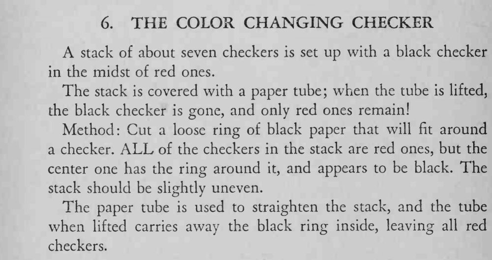

一叠七枚棋子中间夹着一枚黑棋，用纸筒罩住再提起，黑棋竟消失了，剩下的全是红棋。
纸圈要松到能被纸筒带走、又紧到能套住棋子；提起纸筒时要贴桌垂直上提。

A stack of about seven checkers is set up with a black checker in the midst of red ones. The stack is covered with a paper tube; when the tube is lifted, the black checker is gone, and only red ones remain! Method: Cut a loose ring of black paper that will fit around a checker. ALL of the checkers in the stack are red ones, but the center one has the ring around it, and appears to be black. The stack should be slightly uneven. The paper tube is used to straighten the stack, and the tube when lifted carries away the black ring inside, leaving all red checkers.